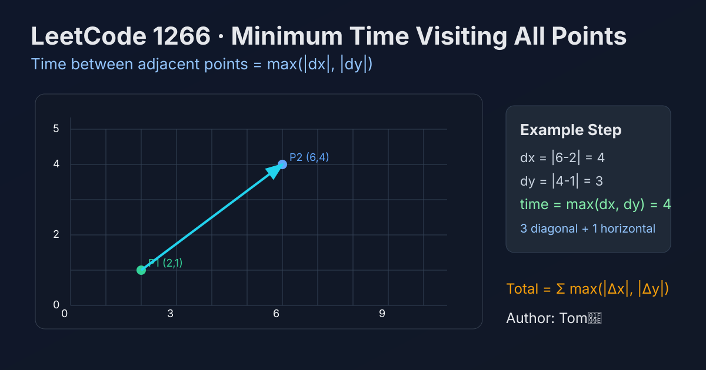

LeetCode 1266: Minimum Time Visiting All Points (Chebyshev Distance Accumulation)
LeetCode 1266GeometryGreedyToday we solve LeetCode 1266 - Minimum Time Visiting All Points.
Source: https://leetcode.com/problems/minimum-time-visiting-all-points/

English
Problem Summary
Given points on a 2D plane, start from the first point and visit each next point in order. In one second, you can move horizontally, vertically, or diagonally by one unit. Return the minimum total time.
Key Insight
For two points (x1, y1) and (x2, y2), let dx = |x1 - x2| and dy = |y1 - y2|. Use diagonal moves for min(dx, dy) seconds to reduce both coordinates together, then move straight for the remaining difference. So the minimum time is max(dx, dy).
Algorithm
- Initialize ans = 0.
- For each consecutive pair of points, compute dx and dy.
- Add max(dx, dy) to ans.
- Return ans.
Complexity Analysis
Let n be number of points.
Time: O(n).
Space: O(1).
Common Pitfalls
- Using Manhattan distance dx + dy by mistake (diagonal moves make this too large).
- Forgetting the points must be visited in the given order.
- Missing absolute value when computing coordinate differences.
Reference Implementations (Java / Go / C++ / Python / JavaScript)
class Solution {
public int minTimeToVisitAllPoints(int[][] points) {
int ans = 0;
for (int i = 1; i < points.length; i++) {
int dx = Math.abs(points[i][0] - points[i - 1][0]);
int dy = Math.abs(points[i][1] - points[i - 1][1]);
ans += Math.max(dx, dy);
}
return ans;
}
}func minTimeToVisitAllPoints(points [][]int) int {
ans := 0
for i := 1; i < len(points); i++ {
dx := points[i][0] - points[i-1][0]
if dx < 0 {
dx = -dx
}
dy := points[i][1] - points[i-1][1]
if dy < 0 {
dy = -dy
}
if dx > dy {
ans += dx
} else {
ans += dy
}
}
return ans
}class Solution {
public:
int minTimeToVisitAllPoints(vector<vector<int>>& points) {
int ans = 0;
for (int i = 1; i < (int)points.size(); ++i) {
int dx = abs(points[i][0] - points[i - 1][0]);
int dy = abs(points[i][1] - points[i - 1][1]);
ans += max(dx, dy);
}
return ans;
}
};class Solution:
def minTimeToVisitAllPoints(self, points: List[List[int]]) -> int:
ans = 0
for i in range(1, len(points)):
dx = abs(points[i][0] - points[i - 1][0])
dy = abs(points[i][1] - points[i - 1][1])
ans += max(dx, dy)
return ansvar minTimeToVisitAllPoints = function(points) {
let ans = 0;
for (let i = 1; i < points.length; i++) {
const dx = Math.abs(points[i][0] - points[i - 1][0]);
const dy = Math.abs(points[i][1] - points[i - 1][1]);
ans += Math.max(dx, dy);
}
return ans;
};中文
题目概述
给定二维平面上的若干点，从第一个点出发，必须按顺序访问后续每个点。每秒可以水平、垂直或对角线移动 1 个单位。求最少总耗时。
核心思路
对于两点 (x1, y1) 到 (x2, y2)，设 dx = |x1 - x2|、dy = |y1 - y2|。先走 min(dx, dy) 步对角线可同时缩小两个方向差值，之后只需沿一个方向直走剩余步数。因此最短时间是 max(dx, dy)。
算法步骤
- 初始化 ans = 0。
- 遍历相邻点对，计算 dx 与 dy。
- 将 max(dx, dy) 累加到 ans。
- 遍历完成后返回 ans。
复杂度分析
设点的数量为 n。
时间复杂度：O(n)。
空间复杂度：O(1)。
常见陷阱
- 误用曼哈顿距离 dx + dy（会高估，因为可走对角线）。
- 忘记“必须按给定顺序访问”。
- 计算坐标差时忘记取绝对值。
多语言参考实现（Java / Go / C++ / Python / JavaScript）
class Solution {
public int minTimeToVisitAllPoints(int[][] points) {
int ans = 0;
for (int i = 1; i < points.length; i++) {
int dx = Math.abs(points[i][0] - points[i - 1][0]);
int dy = Math.abs(points[i][1] - points[i - 1][1]);
ans += Math.max(dx, dy);
}
return ans;
}
}func minTimeToVisitAllPoints(points [][]int) int {
ans := 0
for i := 1; i < len(points); i++ {
dx := points[i][0] - points[i-1][0]
if dx < 0 {
dx = -dx
}
dy := points[i][1] - points[i-1][1]
if dy < 0 {
dy = -dy
}
if dx > dy {
ans += dx
} else {
ans += dy
}
}
return ans
}class Solution {
public:
int minTimeToVisitAllPoints(vector<vector<int>>& points) {
int ans = 0;
for (int i = 1; i < (int)points.size(); ++i) {
int dx = abs(points[i][0] - points[i - 1][0]);
int dy = abs(points[i][1] - points[i - 1][1]);
ans += max(dx, dy);
}
return ans;
}
};class Solution:
def minTimeToVisitAllPoints(self, points: List[List[int]]) -> int:
ans = 0
for i in range(1, len(points)):
dx = abs(points[i][0] - points[i - 1][0])
dy = abs(points[i][1] - points[i - 1][1])
ans += max(dx, dy)
return ansvar minTimeToVisitAllPoints = function(points) {
let ans = 0;
for (let i = 1; i < points.length; i++) {
const dx = Math.abs(points[i][0] - points[i - 1][0]);
const dy = Math.abs(points[i][1] - points[i - 1][1]);
ans += Math.max(dx, dy);
}
return ans;
};
Comments